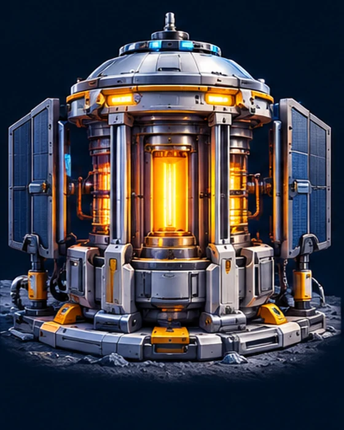
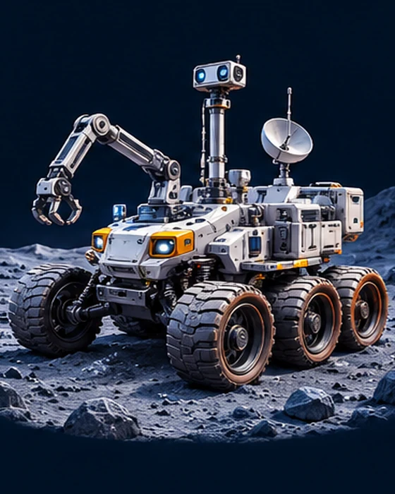
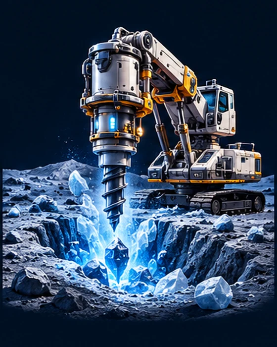
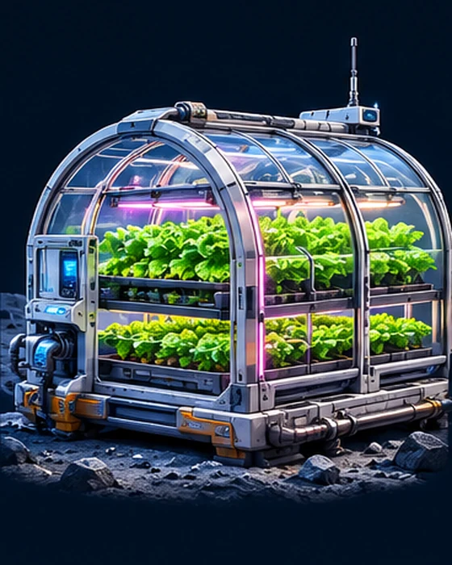
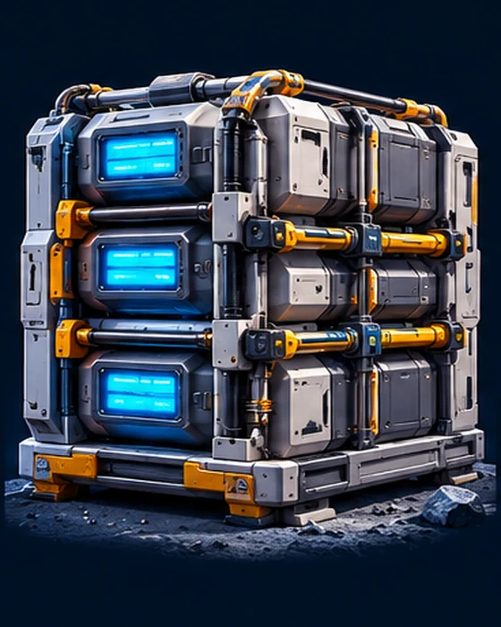

Administra tus recursos
Vigila oxígeno, agua, energía, comida, moral y polvo lunar. Si oxígeno, agua o energía llegan a cero, la misión termina.
Una nueva frontera. Una misión de 30 días. Tu objetivo: establecer una base sostenible en el polo sur lunar.
CENTRO DE CONTROL
Vigila oxígeno, agua, energía, comida, moral y polvo lunar. Si oxígeno, agua o energía llegan a cero, la misión termina.
Cada periodo dispones de 3 PA. Las acciones tienen costes y efectos distintos. Los puntos no se acumulan.
En los días 5, 10, 15 y 20 tendrás que responder a situaciones que afectan a la base.
Alcanza al menos 100 puntos de ciencia antes de terminar el día 30 para completar la misión.
ARCHIVO DE INVESTIGACIÓN

Los sistemas de fisión de superficie se estudian como una posible fuente de energía continua para futuras bases lunares. Un reactor puede aportar electricidad durante periodos sin luz solar, pero requiere diseño, blindaje, gestión térmica y sistemas de seguridad.
Relación con la misión: si instalas el reactor y lo activas al comenzar la noche lunar, compensa el consumo energético nocturno.

LEAF (Lunar Effects on Agricultural Flora) es un experimento diseñado para estudiar cómo responden las plantas a las condiciones de la Luna. No debe confundirse con un invernadero lunar operativo ni con resultados agrícolas ya confirmados en la superficie.
Relación con la misión: cultivar permite recuperar alimentos y moral, pero consume agua y energía; una fuga puede dejar el invernadero fuera de servicio.

La gravedad lunar equivale aproximadamente a una sexta parte de la terrestre. La tensión superficial y la capilaridad influyen en el movimiento del agua; los sistemas hidropónicos o aeropónicos deben controlar cuidadosamente humedad, nutrientes, luz y temperatura.
Relación con la misión: extraer hielo recupera agua y aporta ciencia, pero requiere oxígeno y genera polvo durante la expedición.

El regolito es la capa de material suelto que cubre la superficie. Sus partículas pueden ser abrasivas, adherirse a superficies y afectar trajes, sellos, paneles y mecanismos. Reducir la entrada de polvo es importante para proteger equipos y tripulación.
Relación con la misión: las expediciones aumentan el polvo; limpiarlo reduce su acumulación y evita penalizaciones sobre energía y moral.

La iluminación del polo sur lunar varía mucho según el relieve. Algunas elevaciones reciben luz durante periodos prolongados, mientras que ciertos cráteres permanecen en sombra. Por eso, la planificación energética depende de la ubicación concreta y no de una noche uniforme para toda la región.
INFRAESTRUCTURA





PLANIFICACIÓN
Selecciona una acción para preparar la base.
INFORME FINAL DE MISIÓN
PREFERENCIAS
ORIENTACIÓN DE MISIÓN
Sistemas estables: continúa vigilando los recursos y prepara el respaldo energético antes de la noche lunar.
DECISIÓN DE MISIÓN